RegresiónM5 · Walmart
Ventas diarias por producto y tienda
800 series (80 por tienda), 500 días y 32 variables de calendario, precio, lags y medias móviles. El objetivo es anticipar unidades vendidas.
400,000filas
32features
28días test
Aprendizaje supervisado · modelos de árboles
Tres ensambles, tres decisiones de negocio. Extra Trees para pronosticar demanda, AdaBoost para cribar diabetes y CatBoost para anticipar abandono universitario. Teoría, entrenamiento real y simulación en el navegador.
Cada punto es una decisión: una rama, un umbral, una probabilidad.
Panorama
Los tres modelos pertenecen a la familia de árboles y ensambles, pero optimizan de forma distinta: promediando árboles muy aleatorios, reponderando errores o ajustando gradientes con estadísticas ordenadas.
800 series (80 por tienda), 500 días y 32 variables de calendario, precio, lags y medias móviles. El objetivo es anticipar unidades vendidas.
69,057 encuestas balanceadas con 21 variables demográficas y de estilo de vida; se añaden 4 variables clínicas derivadas.
4,424 estudiantes, 36 variables originales (18 categóricas) y 3 clases: Dropout, Enrolled y Graduate. Se añaden 3 ratios académicos.
Descarga pública, limpieza, deduplicación y partición temporal o estratificada.
Lags y ventanas móviles sin fuga; codificación ordinal; escalado solo donde aporta.
RandomizedSearchCV con validación temporal o estratificada y 12–14 configuraciones.
Refit sobre train+validación, early stopping en CatBoost y control de overfitting.
Métricas, intervalos bootstrap, calibración, importancia y exportación web.
Ensamble por bagging extremo
Extremely Randomized Trees · Predicción de ventas minoristas (Walmart M5)
Un Extra Tree es un árbol de regresión que divide el espacio en regiones disjuntas. Cada hoja predice la media de las observaciones que caen en ella:
La partición se elige maximizando la reducción de varianza (equivalente a la reducción de MSE):
La diferencia clave con Random Forest: en cada nodo se sortean K umbrales aleatorios por variable y se elige el mejor de ellos, sin bootstrap obligatorio. El ensamble promedia M árboles:
MSE: L(y, ŷ) = (y − ŷ)². El minimizador es la esperanza condicional E[y | x], y el promedio de árboles reduce la varianza sin aumentar el sesgo de forma apreciable.
El modelo se entrenó con 366 árboles. La curva muestra cómo cae el error al acumular árboles; el punto se mueve con el control.
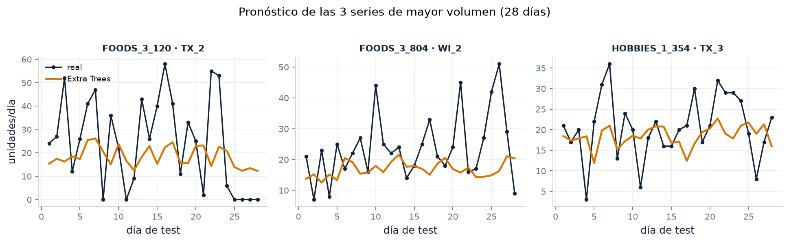
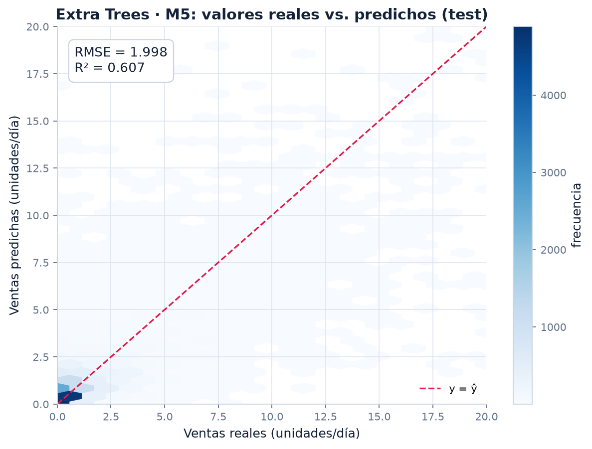
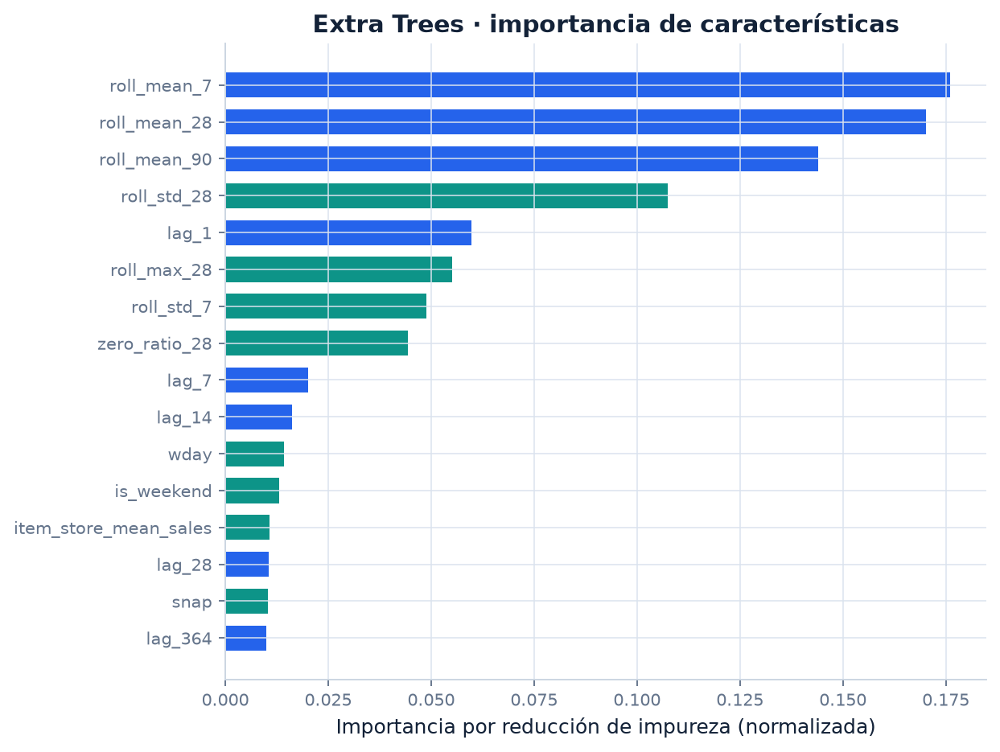
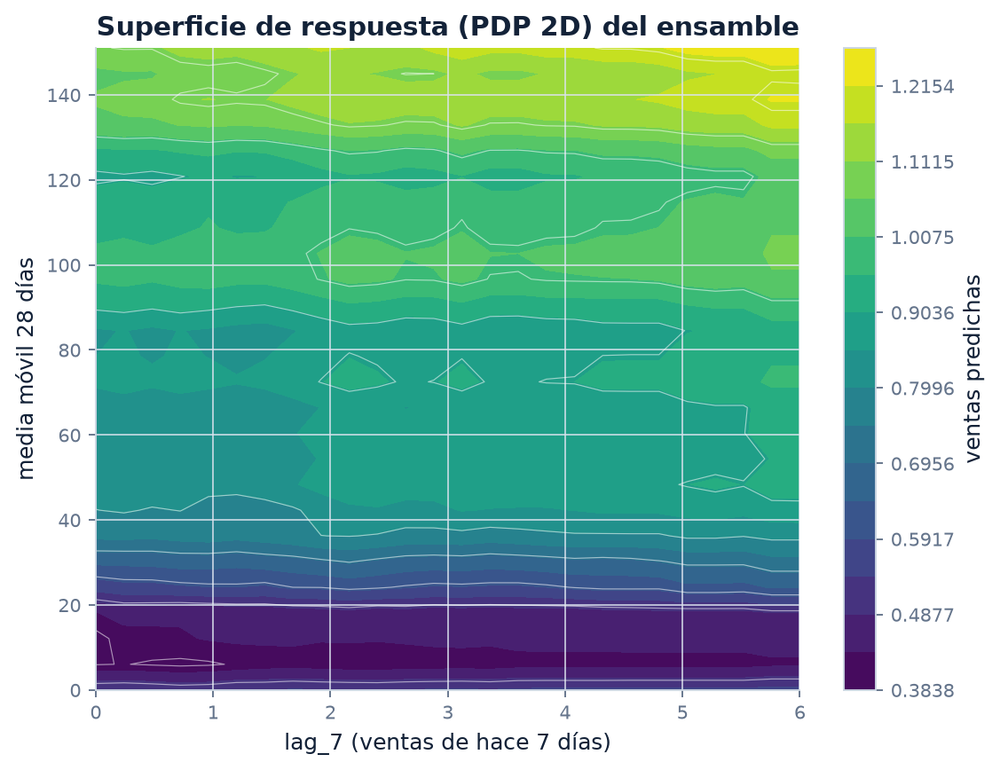
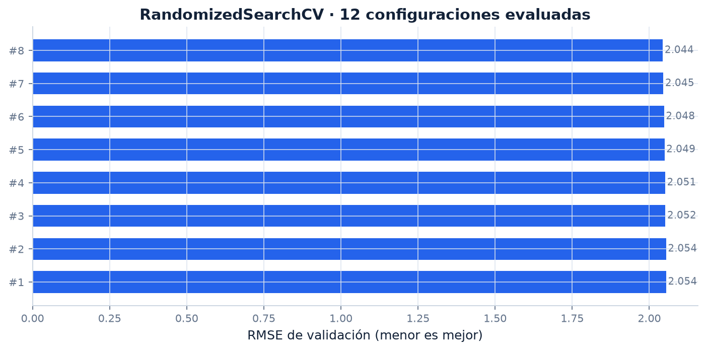
Simulación interactiva
Ajusta el contexto de la serie y observa la predicción de un bosque Extra Trees exportado a JavaScript. La banda gris representa ±1 desviación entre árboles.
Curva de sensibilidad: predicción al variar lag_7 y mantener el resto del escenario fijo.
Caso de uso
M5 contiene 30,490 series de producto-tienda y un calendario de 1,969 días; la extracción usada cubre 1,913 días de ventas. En una muestra estratificada de 800 series, el 59.8% de los días no registra ventas: la distribución es cero-inflada y muy asimétrica. Extra Trees maneja bien esa mezcla porque no impone linealidad, tolera picos y reduce varianza promediando árboles.
El valor operativo está en el error absoluto: con MAE = 0.990 unidades/día, un gerente puede dimensionar reposición y seguridad de stock por producto. El baseline estacional (lag_7) obtiene RMSE 2.776; el ensamble lo reduce a 1.998, un 28% menos. El R² de 0.607 es comparable al reportado en la literatura para M5 (R² ≈ 0.585), aunque la muestra y la ventana no son idénticas.
Ensamble por boosting adaptativo
Adaptive Boosting · Predicción de diabetes (CDC BRFSS 2015)
AdaBoost construye un clasificador fuerte como combinación lineal de clasificadores débiles. Para etiquetas y ∈ {−1, +1}:
En cada ronda se entrena ht sobre una distribución de pesos wi. El error ponderado y su peso son:
Los pesos se actualizan para castigar los errores y se normalizan:
Pérdida exponencial: L(y, f) = exp(−y f(x)). AdaBoost es un descenso por coordenadas en el espacio de funciones que la minimiza de forma forward-stagewise.
Si cada débil tiene margen γ (εt ≤ ½ − γ), el error de entrenamiento está acotado por exp(−2Tγ²): el ensamble se vuelve más seguro al añadir rondas, sin sobreajustar necesariamente.
370 estimadores débiles. La curva muestra AUC, F1 y accuracy; el umbral de decisión se fijó en 0.38 para priorizar recall en cribado.
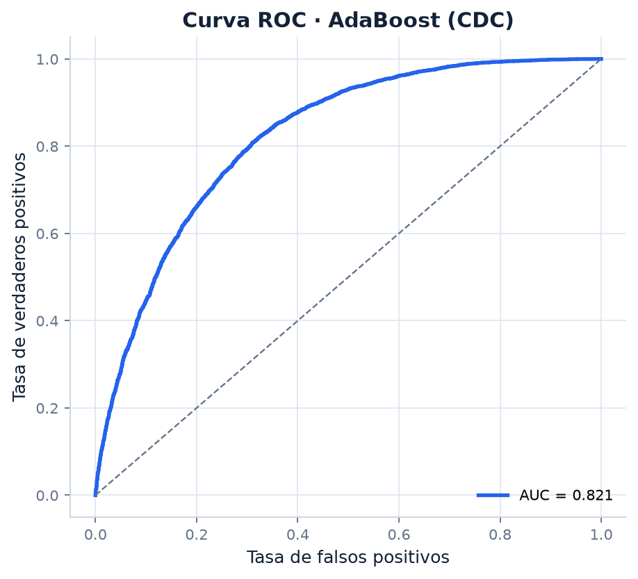
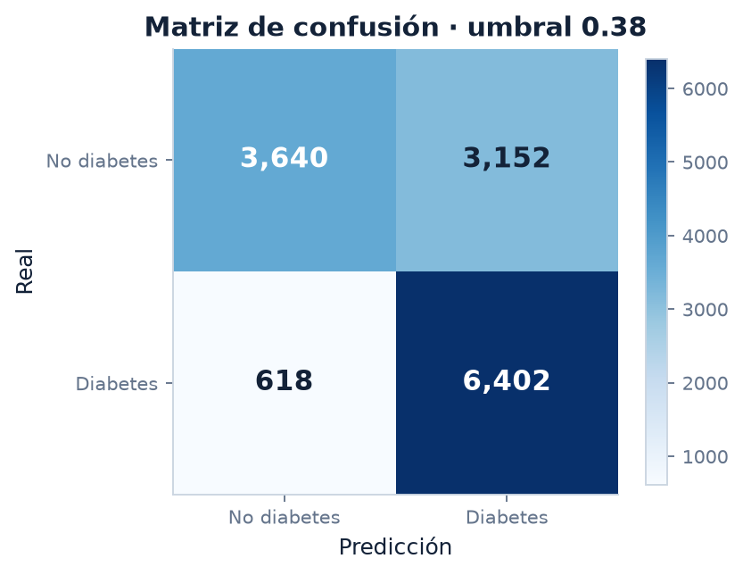
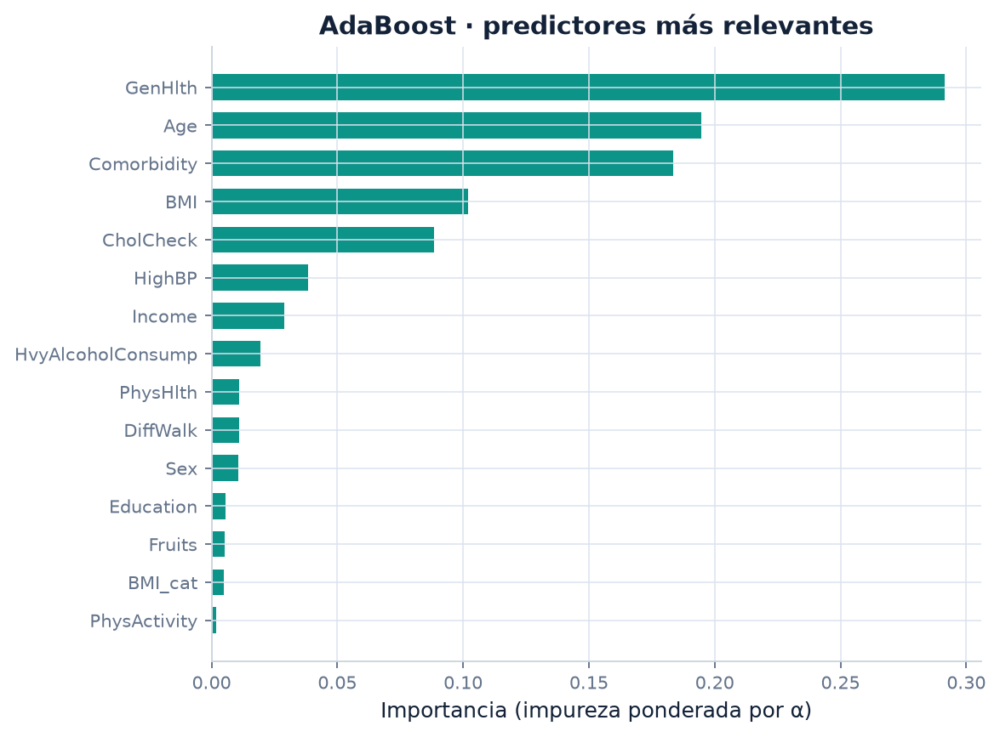
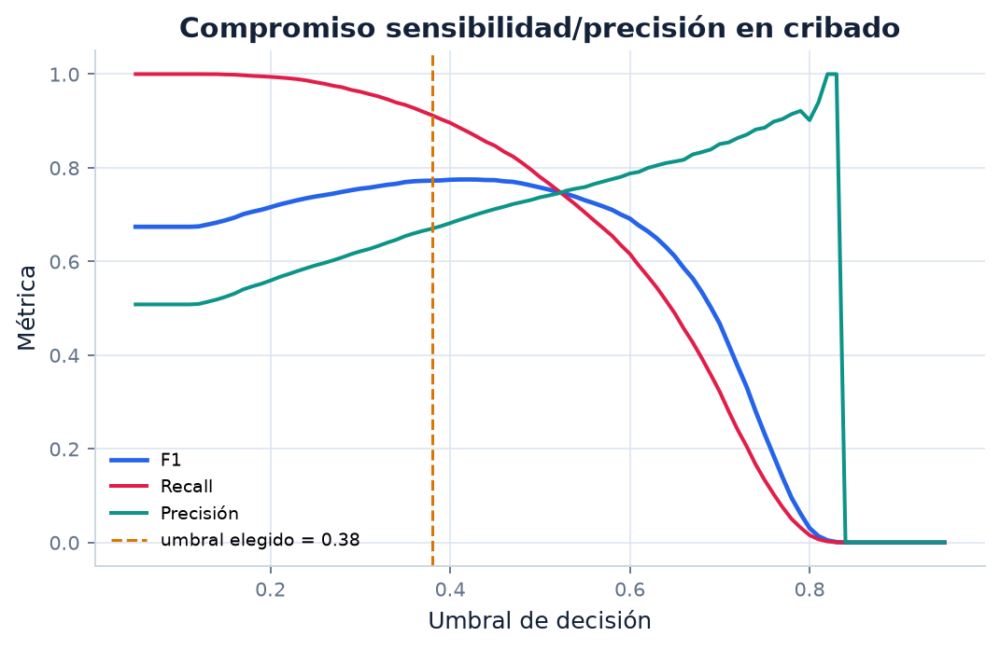
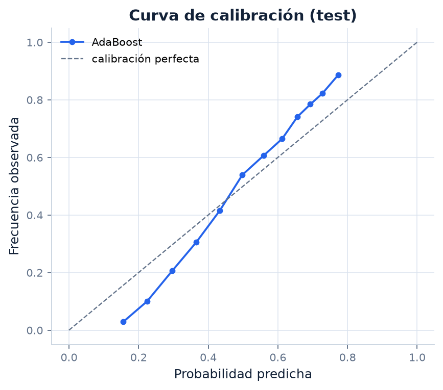
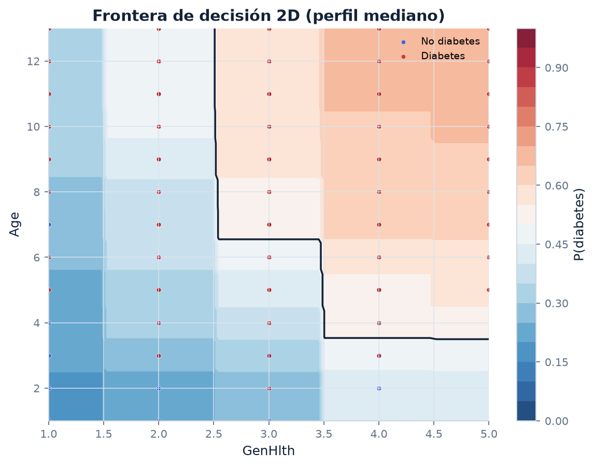
Simulación interactiva
Modifica el perfil y observa la probabilidad del ensamble AdaBoost real exportado a JavaScript, junto con los votos que más empujan la decisión.
Sensibilidad al IMC manteniendo el resto del perfil. La línea punteada marca el umbral 0.38.
Caso de uso
El conjunto contiene 253,680 respuestas originales; se usa la versión balanceada de 70,692 registros (50/50) y se eliminan 1,635 duplicados. La variable objetivo es el diagnóstico de diabetes o prediabetes. En salud pública, el costo de un falso negativo (no derivar a una persona enferma) es mucho mayor que el de un falso positivo (prueba adicional), por lo que el umbral se baja a 0.38: recall 0.912 y precisión 0.670.
AdaBoost es adecuado porque concentra capacidad en los casos difíciles: cada ronda repondera los errores. Con árboles de profundidad 3 captura interacciones clínicas sin exigir escalado ni imputación compleja. Su debilidad es la sensibilidad a etiquetas ruidosas y la calibración imperfecta; por eso se reporta Brier = 0.178 y se recomienda recalibrar antes de comunicar probabilidades individuales.
Gradient boosting con categóricas nativas
Categorical Boosting · Predicción de abandono universitario (UCI)
CatBoost es un gradient boosting que construye un modelo aditivo. Para clasificación multiclase con softmax:
La pérdida es entropía cruzada multiclase:
Cada hoja recibe el valor Newton que minimiza la aproximación cuadrática local:
Para una categórica k, CatBoost reemplaza la categoría por una estadística objetivo calculada con una permutación aleatoria y solo con ejemplos anteriores: x̂i,k = (Σj: σ(j)<σ(i) yj + a p) / (Ni,k + a). Así evita el target leakage típico del target encoding clásico.
Los árboles son oblivious: el mismo split se usa en todo un nivel. Esto reduce el sobreajuste, acelera la inferencia y permite importancias estables. El boosting combina muchos árboles pequeños con regularización L2 y shrinkage ν.
El mejor modelo usó 172 iteraciones tras early stopping (350 configuradas). La curva muestra F1 macro, accuracy y log-loss.
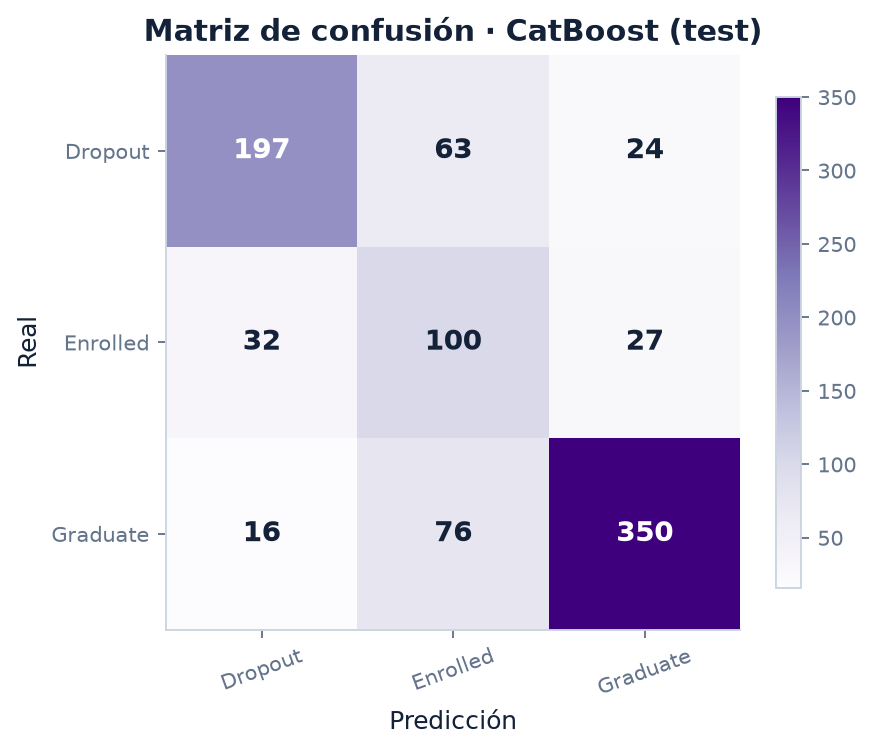
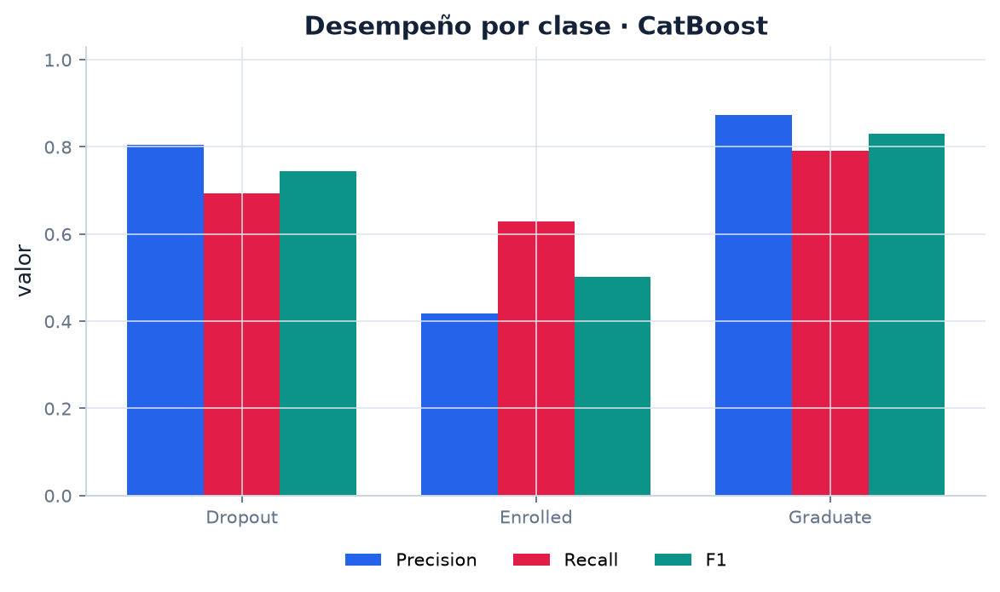
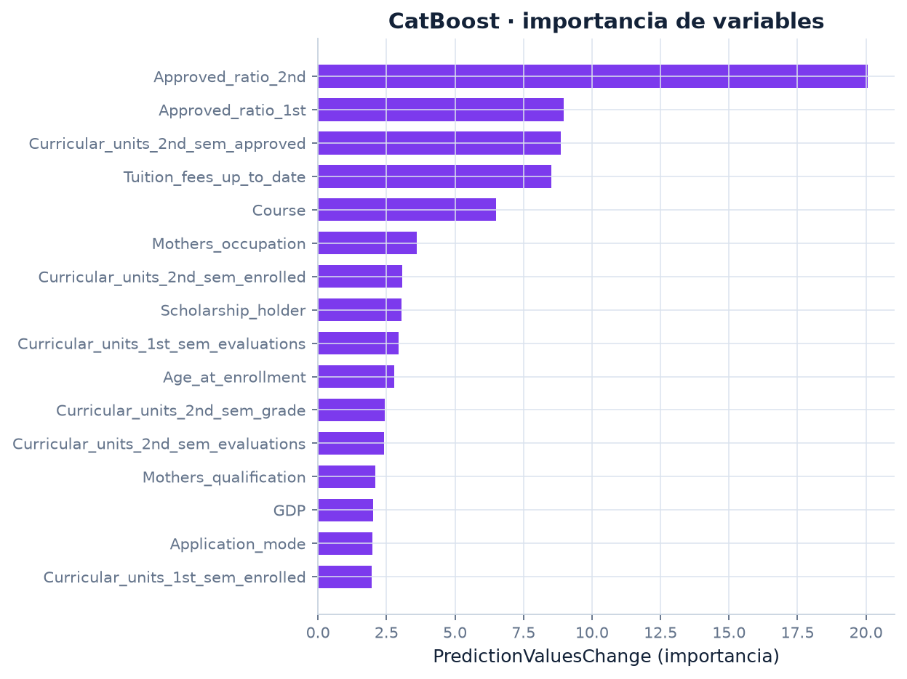
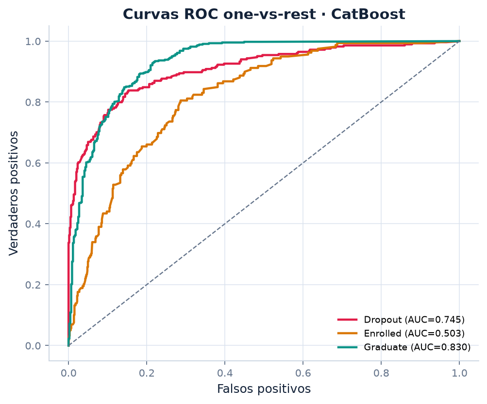
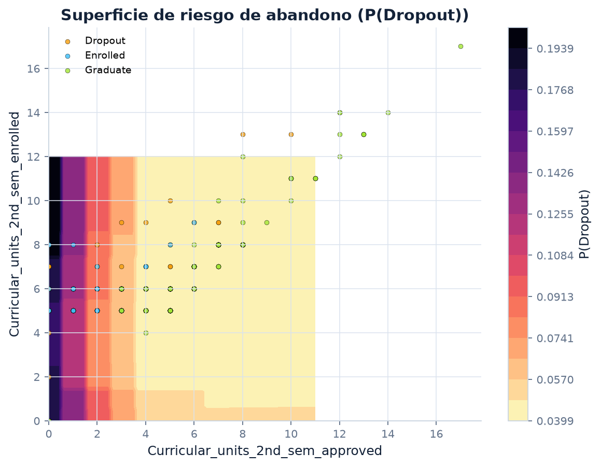
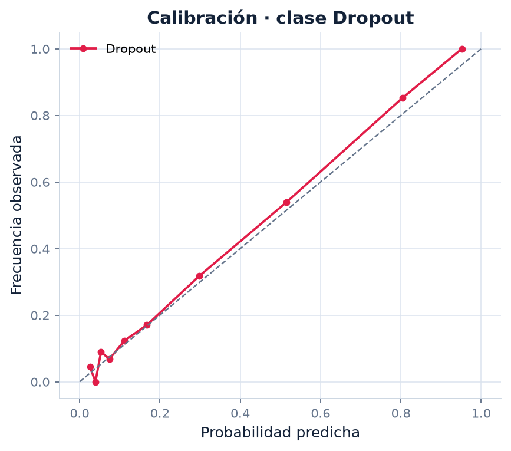
Simulación interactiva
Cambia la trayectoria académica y el contexto. El modelo demo exportado replica las probabilidades de CatBoost con one-hot encoding.
Barras = probabilidad softmax del modelo demo. La clase Enrolled es estructuralmente la más difícil de separar.
Caso de uso
El dataset reúne 4,424 estudiantes de diversas carreras con 36 variables: estado civil, modo de solicitud, curso, cualificaciones y ocupaciones de los padres, becas, deudas, notas y unidades aprobadas. 18 variables son categóricas y muchas tienen alta cardinalidad (Course, Application_mode, qualifications). CatBoost las trata nativamente con estadísticas objetivo ordenadas, sin explosión de columnas ni fuga de información.
El modelo distingue tres estados. La clase Dropout alcanza F1 = 0.745 y recall = 0.694; Graduate, F1 = 0.830. Enrolled es la clase más ambigua (F1 = 0.503) porque es un estado intermedio y transitorio. Para intervención, lo relevante es la probabilidad de Dropout: permite ordenar estudiantes y asignar tutorías, becas o acompañamiento con presupuesto limitado.
Lectura comparativa
No hay un ganador universal: la elección depende del tipo de dato, del costo del error, de la cardinalidad de las categóricas y de cuánta interpretabilidad exige el dominio.
| Criterio | Extra Trees | AdaBoost | CatBoost |
|---|---|---|---|
| Mecanismo | Bagging extremo + splits aleatorios | Boosting adaptativo por reponderación | Gradient boosting con árboles oblivios |
| Pérdida | MSE | Exponencial | Entropía cruzada + L2 |
| Optimización | Greedy sobre splits aleatorios | Forward stagewise / coordenadas | Newton por hoja + gradiente |
| Categóricas | Ordinal / one-hot manual | Ordinal / one-hot manual | Nativas (ordered target statistics) |
| Escalado | Innecesario | Innecesario (árboles), aplicado en pipeline | No requerido |
| Outliers | Muy robusto | Sensible (pérdida exponencial) | Robusto con regularización |
| Interpretabilidad | Media (importancia/PDP) | Media-alta (débiles simples) | Media (importancia/SHAP) |
| Costo de cómputo | Bajo y paralelo | Muy bajo | Medio; más caro de tunear |
| Riesgo principal | Suaviza picos; no extrapola | Ruido y calibración | Más hiperparámetros y costo |
| Mejor escenario | Tabular grande, ruidoso, regresión | Tabular pequeño, cribado, Boost rápido | Muchas categóricas, multiclase, datos pequeños |
Escala 1–5 construida a partir de la evidencia de los experimentos y de la literatura. No sustituye una validación específica del dominio.
tienes cientos de miles de filas, features numéricas ruidosas, demanda intermitente y necesitas entrenar rápido y en paralelo. Es el más tolerante a outliers y el que menos preprocesamiento exige.
el dataset es pequeño o mediano, necesitas un baseline fuerte en minutos y el costo del falso negativo es alto. Ajusta el umbral y recalibra si vas a comunicar probabilidades.
hay muchas categóricas de alta cardinalidad, clases múltiples y pocas filas. El ordered target statistics evita leakage y suele ganar sin ingeniería de categóricas.
Cierre
Los tres modelos confirman que los ensambles de árboles siguen siendo una línea base formidable para datos tabulares. Extra Trees demuestra que la aleatoriedad controlada es una forma barata de reducir varianza; AdaBoost, que reponderar errores convierte reglas débiles en un cribado útil; CatBoost, que el tratamiento nativo de categóricas resuelve un cuello de botella real en educación y salud.
La comparación no es de “mejor modelo” sino de mejor ajuste: el mismo algoritmo que brilla en M5 no sería la primera opción para 4,424 estudiantes con 18 categóricas, y CatBoost sería excesivo para un baseline de 70k filas numéricas. La métrica también cambia con el costo del error: RMSE y MAE para inventario; recall y calibración para salud; macro-F1 y F1 de Dropout para educación.
Quedan límites: la muestra de M5 no cubre las 30,490 series; el umbral de AdaBoost se eligió en una partición pequeña; CatBoost tiene solo 885 estudiantes en test. Los intervalos bootstrap y la validación temporal/estratificada acotan la incertidumbre, pero no la eliminan. La reproducibilidad está garantizada por el repositorio, las semillas fijas y los scripts de descarga y entrenamiento.
requirements.txt.Entregables
El informe desarrolla la formulación matemática, el diseño experimental, los resultados y el análisis crítico de aplicaciones. El repositorio incluye el pipeline completo en Python, los artefactos de entrenamiento y esta simulación estática.
git clone https://github.com/Luchi-Marita/arboles-ensambles-equipo2.git
cd arboles-ensambles-equipo2
pip install -r requirements.txt
python scripts/download_data.py
python run_all.pyM5 requiere una cuenta de Kaggle; CDC y UCI se descargan automáticamente. Las rutas y semillas están centralizadas en src/config.py.